Module 7 — Security | Pages 511–526
31. In Condition Scripts, configure the script as follows:
Note:
You may use the applicable portion of the script in C:\Training\Lab 22 - Locking
Down Your Application.txt.
32. In the Condition Type drop-down list, select On False.
Condition:
$InactivityWarning
Comment:
Opens and closes the Inactivity window
Condition Type:
On True (default)
Body:
IF $Operator <> "None" THEN
Show "Inactivity";
ENDIF;
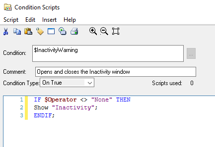
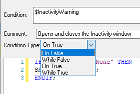
33. In the script body, enter:
Hide "Inactivity";
34. Click OK to close Condition Scripts.
Note:
Clicking OK validates the syntax of the script and then saves and closes the script
editor.
In Scripts, expand Condition to see that $InactivityWarning is listed.
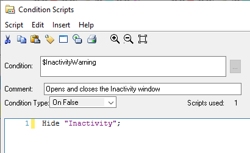
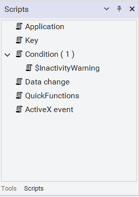
Test in Runtime
Now, you will switch to WindowViewer to test the implementation of the inactivity settings in
runtime.
35. In WindowMaker, click Runtime.
36. Log on as TUser with a Password of ww.
37. Wait 15 seconds for the Inactivity window to automatically open.
A blinking message appears. This reminds users they must interact with the application or
they will be logged off.
Notice that TUser is still logged in.
38. Click the mouse or press a key on the keyboard.
The $InactivityWarning tag, used in the Condition script, is set to 0 with user activity. The On
False trigger in the script then hides the Inactivity window.
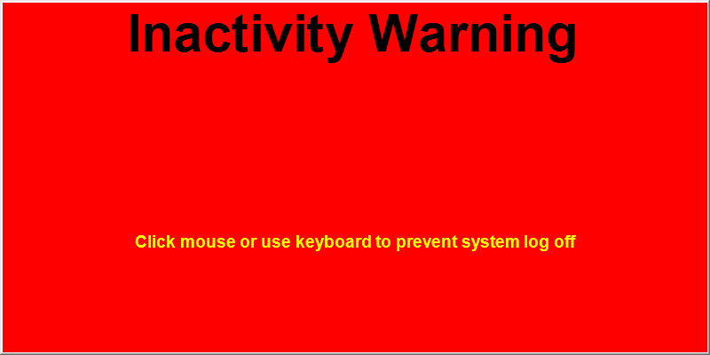
39. Wait 30 seconds for the system to log you off automatically.
The Inactivity window shows You have been logged off!
The Logon window shows the None user and Access Level as 0.
40. Click Development! to return to WindowMaker.
41. Ensure the Inactivity window is closed.
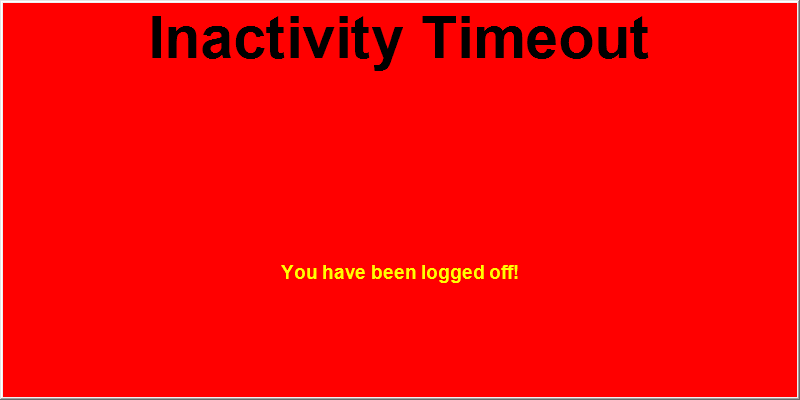
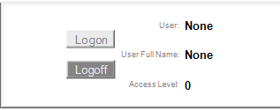
42. On the File menu, select Configure | WindowViewer.
43. On the Preferences tab, in Warning, enter 0.
44. In Timeout, enter 0.
45. Click Save.
46. Close WindowViewer.
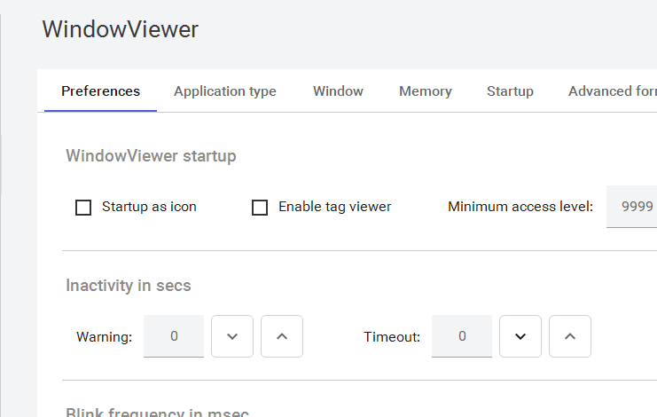
Create a Popup Window to Cover the Menu Bar
Now, you will create a popup window that will cover the WindowViewer menu bar, preventing the
user from clicking the menu bar options.
47. In WindowMaker, in the backstage, select + New.
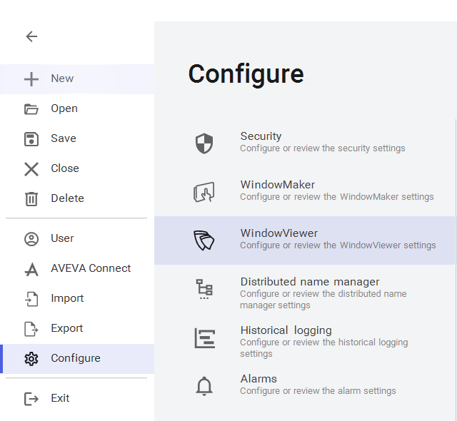
48. In New, with Frame window selected, configure properties for the window as follows:
49. Click Create.
Name:
MenuBarCover
Comment:
Prevents clicking the menu options
Window Type:
Popup (default)
X:
0
Y:
-20
Width:
1920
Height:
20
Window Color:
White (default)
Title Bar:
unchecked
Frame Style:
None
Size controls:
unchecked (default)
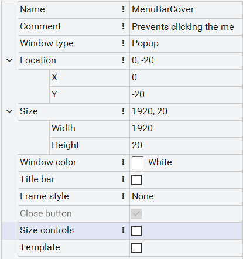
Create the $AccessLevel Data Change Script
Now, you will create a Data Change script for $AccessLevel to show and hide the Menu Bar Cover
window, depending on the Access Level granted to the current logged on user.
50. In Scripts, double-click Data change.
Data Change Scripts appears.
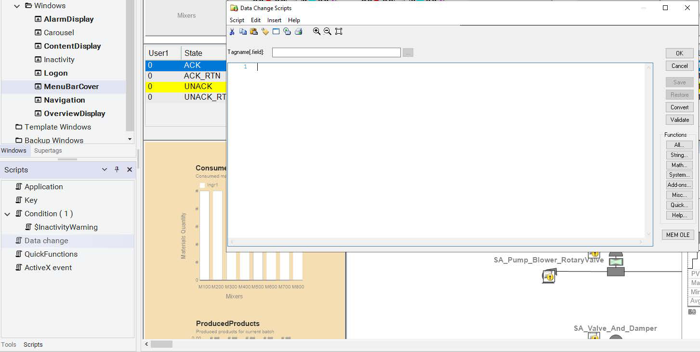
51. Configure the script as follows:
Note:
You may use the applicable portion of the script in C:\Training\Lab 22 - Locking
Down Your Application.txt.
52. Click OK to close Data Change Scripts.
53. In Scripts, expand Data change to see that the $AccessLevel script is listed.
Tagname[.field]:
$AccessLevel
Body:
{ Menu Access }
IF $AccessLevel > 5000 THEN
{ Allow menu access }
Hide "MenuBarCover";
ELSE
{ Deny menu access }
Show "MenuBarCover";
ENDIF;
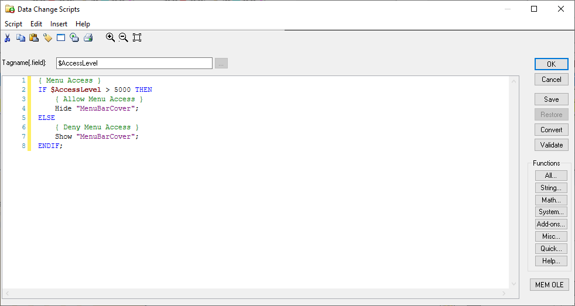
Update the Home Windows
Now, you will update the list of WindowViewer Home Windows to include the MenuBarCover
window.
54. On the File menu, select Configure | WindowViewer.
55. On the Startup tab, ensure the following windows are selected:
AlarmDisplay
ContentDisplay
Logon
MenuBarCover
Navigation
OverviewDisplay
56. Click Save.
A WindowMaker notification message appears.
57. Exit the backstage.
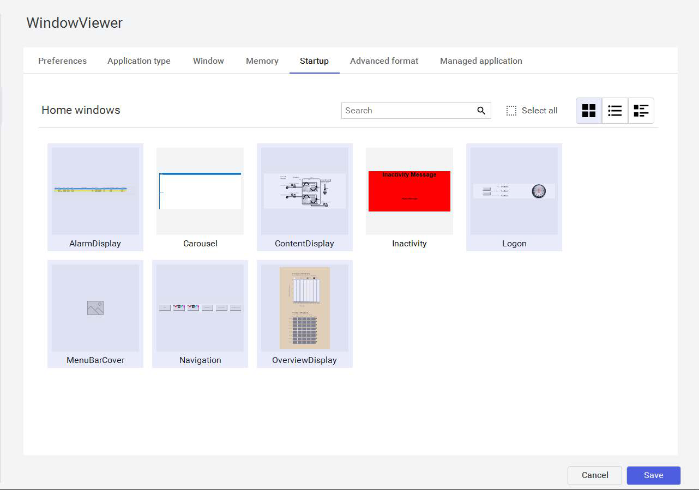
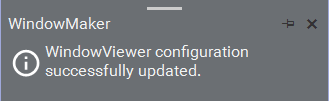
Test in Runtime
Now, you will switch to WindowViewer to test the implementation of the covered menu bar in
runtime.
58. In WindowMaker, click Runtime.
The menu bar is covered by the new window.
59. Log in as Operator1 with a Password of ww.
The menu bar is still covered since the operators have an Access Level of 1000 and the script
requires an Access Level greater than 5000.
60. Log in as Administrator with no password.
The menu bar is displayed because the Administrator has an Access Level greater than
5000.
61. In the Logon window, click Logoff.
The menu bar, including the Development! fast switch, is covered, to protect it from
unauthorized access.
62. Log in again as Administrator, and then in the menu bar, click Development! to return to
WindowMaker.
Deny Access to the Alt, Esc, and Win Keys
The implementation of application lock down configured so far handles mouse interaction. In the
following steps, you will handle keyboard interaction. This will be done using the
EnableDisableKeys() script function to enable and disable the Alt, Esc, and Win keys, depending
on which user is logged in to the application.
63. In Scripts, ensure Data change is expanded, and double-click the $AccessLevel script.
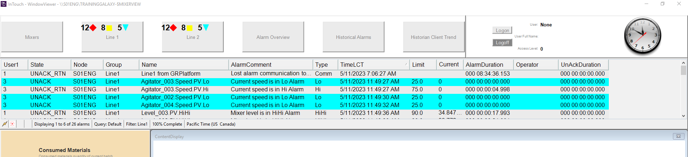
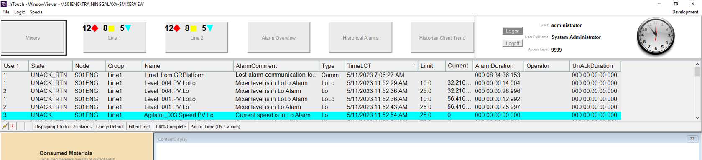
64. Modify the existing script by adding the EnableDisableKeys () functions as follows:
Note:
You may use the applicable portion of the script in C:\Training\Lab 22 - Locking
Down Your Application.txt.
The EnableDisableKeys() script function receives three Boolean parameters to disable the
Alt, Esc, and Win keys, in that order: 0 (false) enables the key; 1 (true) disables the key.
65. Click OK to validate, save, and close the Data Change script.
Tagname[.field]:
$AccessLevel
Body:
{ Menu Access }
IF $AccessLevel > 5000 THEN
{ Allow menu access }
Hide "MenuBarCover";
EnableDisableKeys( 0, 0, 0);
ELSE
{ Deny menu access }
Show "MenuBarCover";
EnableDisableKeys( 1, 1, 1);
ENDIF;
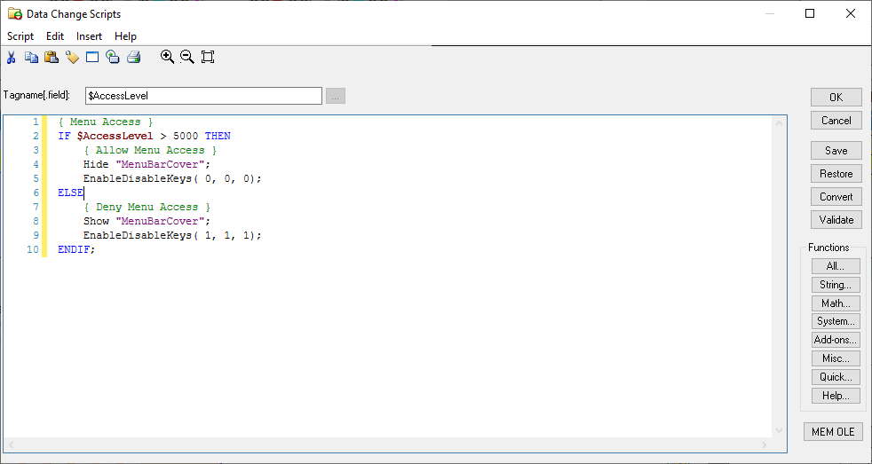
Next, you will create an Application, On Startup script to ensure that the Alt, Esc, and Win keys are
disabled when WindowViewer is started.
66. In Scripts, double-click Application.
Application Script appears.
67. In Application Script, in the Condition Type drop-down, select On Startup.
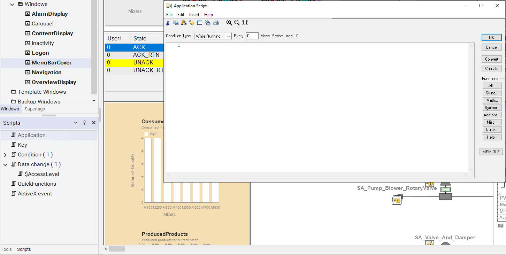
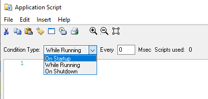
68. For the body of the script, enter:
Note:
You may use the applicable portion of the script in C:\Training\Lab 22 - Locking
Down Your Application.txt.
69. Click OK to validate, save, and close the script.
Test in Runtime
Finally, you will switch to WindowViewer to test the implementation of the EnableDisableKeys()
script function in runtime. You will test access to the Alt, Esc, and Win Keys. First, you will close
WindowViewer to allow the Application On Startup script you just configured to run.
Note: In virtual environments, the host computer captures certain key combinations and does not
pass these through to the virtual environment. If you are taking this course from a virtual machine,
your instructor may provide special shortcuts such as a virtual keyboard to recreate these key
combinations.
70. Close WindowViewer.
71. In WindowMaker, open the MenuBarCover window, and then click Runtime.
72. Verify that no user is logged in.
Body:
{ Disable the Alt, Esc, Win keys }
EnableDisableKeys( 1, 1, 1);
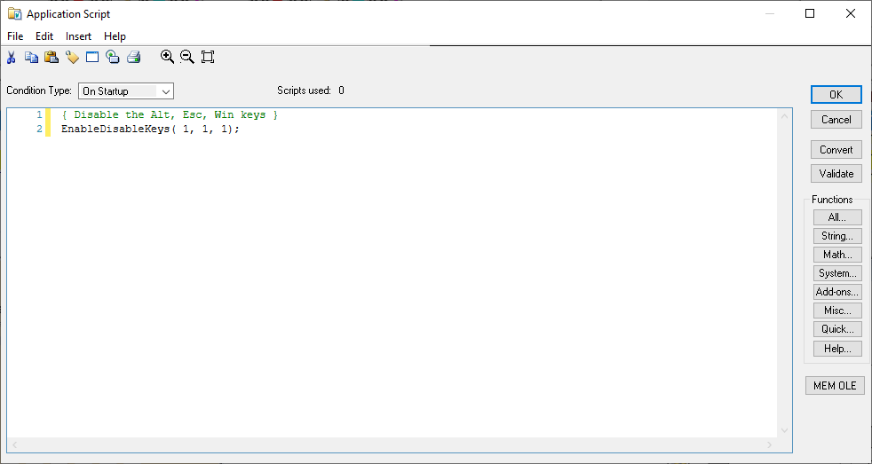
First you will test a key combination, Alt+F, which is a shortcut for the File menu in WindowViewer.
With access to the File menu, a user can open windows or close them.
73. Press and hold the Alt key and press F.
The File menu does not open.
Next you will test a key combination, Ctrl+Shift+Esc, which is a shortcut for opening the Windows
Task Manager. With access to Task Manager, a user can start applications and close applications.
74. Press and hold Ctrl+Shift+Esc.
Task Manager does not open.
Now you will test the Win key, which opens the Windows Start menu.
75. Press the Win key.
The Start menu does not open.
Next you will perform the same key combinations as a logged in user.
76. Log in as Administrator with no password.
77. Press and hold the Alt key and press F.
The File menu opens.
78. Press and hold Ctrl+Shift+Esc.
Task Manager opens.
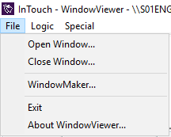
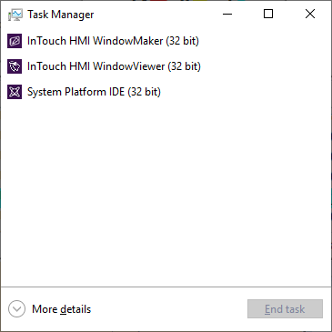
79. Press the Win key.
The Start menu opens.
80. Click Development! to return to WindowMaker.
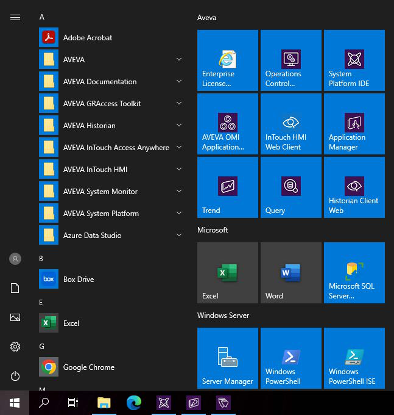
Review the sections above for the main topics, step-by-step procedures, and important configuration details.
This is part of the InTouch HMI layer, which integrates with Application Server's Galaxy for a complete visualization solution.
Module 7 — Security. AVEVA InTouch for System Platform 2023 Training.
Next: Lesson L39 — Web Client Overview